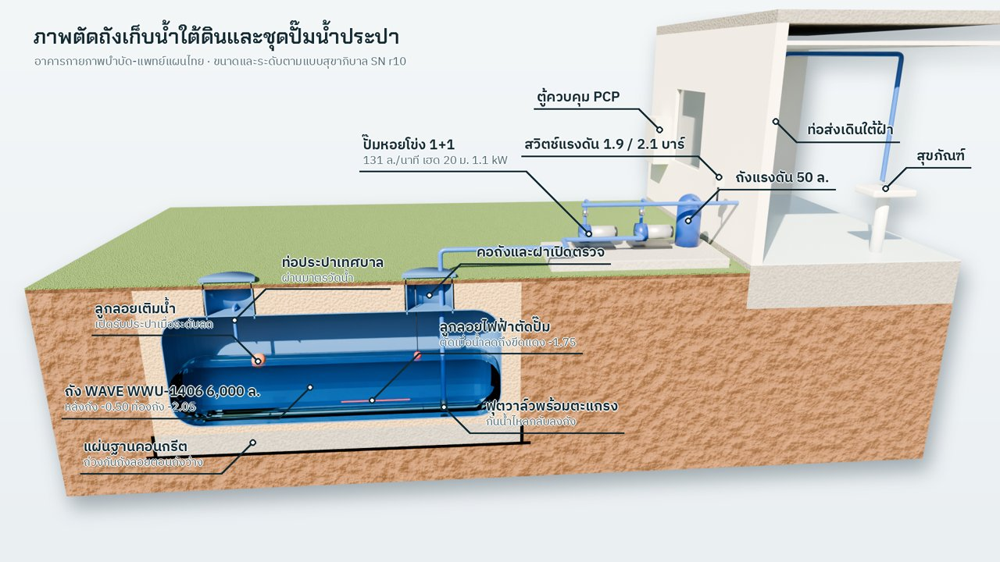

ระบบน้ำประปา · 2 อาคาร
ระบบน้ำประปาของอาคารทั้งสองหลัง
น้ำประปาจากท่อเมนเทศบาลไหลลงถังเก็บน้ำใต้ดิน ชุดปั๊มหอยโข่ง 2 ตัวบนฐานข้างถังดูดน้ำขึ้นมาอัดเข้าท่อ แล้วส่งขึ้นท่อเหนือฝ้าไปจ่ายสุขภัณฑ์ทุกจุด ตู้ควบคุม PCP สั่งปั๊มเดินและหยุดตามแรงดันในท่อ ทั้งสองอาคารใช้ระบบเดียวกัน ต่างกันที่ขนาดปั๊มและค่าแรงดัน

แผนผังการทำงาน
เลือกสถานการณ์เพื่อดูว่าน้ำไหลทางไหน ปั๊มตัวไหนเดิน และตู้ควบคุมทำอะไร เส้นที่เคลื่อนไหวคือเส้นทางที่มีน้ำไหลอยู่
แรงดันในท่อขึ้นลงอย่างไร
สวิตช์แรงดันสั่งปั๊มเดินเมื่อแรงดันลดถึงค่าตั้ง และสั่งหยุดเมื่อถึงค่าหยุด ระหว่างปั๊มหยุด ถังแรงดันจ่ายน้ำให้ก๊อกที่เปิดอยู่ ช่วยให้ปั๊มไม่ต้องเดินหยุดถี่ ตู้ PCP สลับปั๊มตัวที่เดินทุกรอบเพื่อให้ปั๊มสึกหรอเท่ากัน
ลำดับการทำงานของตู้ควบคุม
ตัวเลขออกแบบเทียบสองอาคาร
| รายการ | กายภาพบำบัด-แพทย์แผนไทย | วารีบำบัด |
|---|---|---|
| ผู้ใช้อาคารที่ใช้คำนวณ | เจ้าหน้าที่ 20 ผู้ป่วย 120 | เจ้าหน้าที่ 15 ผู้ใช้ 80 ที่นั่ง 30 |
| น้ำใช้ต่อวัน | 4,400 ล. | 4,550 ล. |
| ถังเก็บน้ำใต้ดิน | WAVE WWU-1406 6,000 ล. 1 ใบ | WAVE WWU-1406 6,000 ล. 1 ใบ |
| น้ำสำรองเทียบการใช้ 1 วัน | 1.36 วัน | 1.32 วัน |
| หน่วยสุขภัณฑ์รวม (FU) | 69 | 125 |
| อัตราไหลออกแบบ | 131 ล./นาที | 186 ล./นาที |
| เฮดที่ต้องการ (สูงยก + เสียดทาน + แรงดันปลายทาง 10 ม.) | 18.5 ม. | 16.9 ม. |
| ปั๊มที่เลือก (1 เดิน 1 สำรอง) | เฮด 20 ม. 1.1 kW | เฮด 20 ม. 1.5 kW |
| สวิตช์แรงดัน เดิน / หยุด · อัดลมถัง | 1.9 / 2.1 · 1.7 บาร์ | 1.8 / 2.0 · 1.6 บาร์ |
| ระยะดูดยกจากระดับตัดปั๊มถึงศูนย์ปั๊ม | 1.97 ม. | 1.97 ม. |
| ท่อดูดรวม · ท่อส่งรวม | 2" · 1-1/2" | 2-1/2" · 2-1/2" |
| ท่อน้ำดี | PVC ชั้น 13.5 ทั้งระบบ | |
อาคารวารีบำบัดยังมีท่อแยกไปเติมน้ำถังพักของสระผ่านวาล์วไฟฟ้า 1" และช่องว่างอากาศ ดูหน้า ระบบน้ำสระ